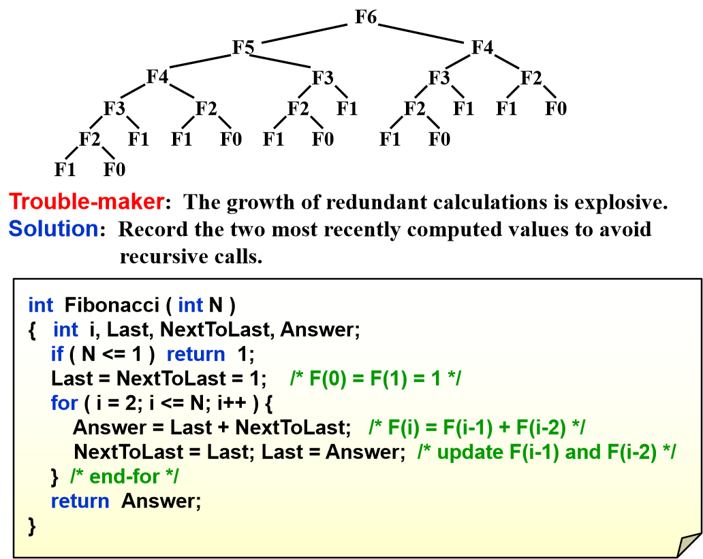
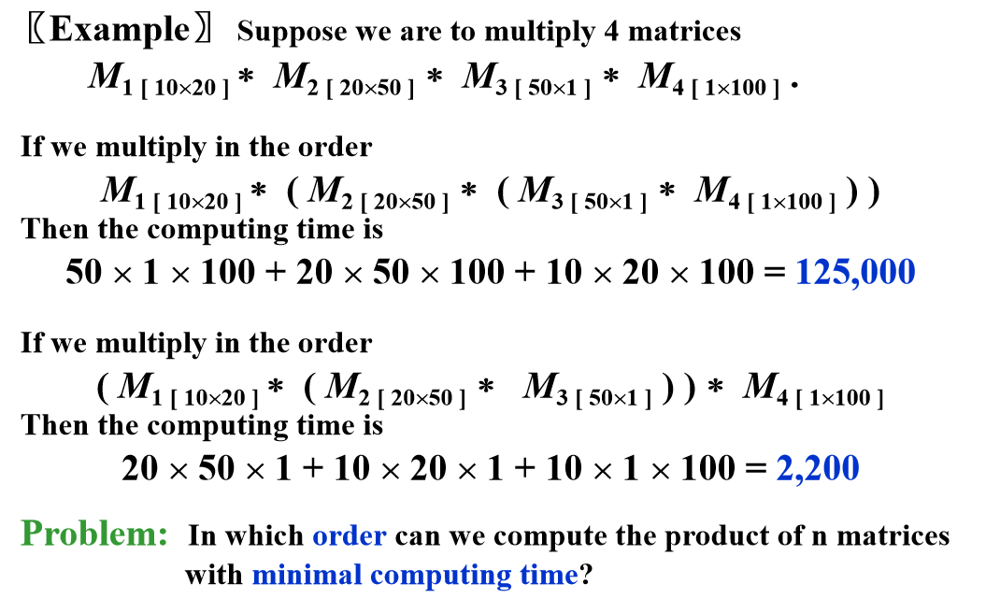
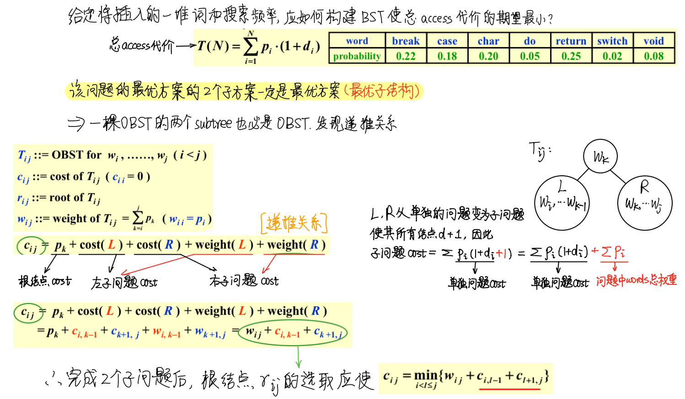

Dynamic Programming
[1.8.x] Lesson 8——Dynamic Programming
如果一个问题的最优解是通过组合对子问题的最优解以及从这些组合中选择Min/Max, 那么这种范式就是动态规划的范式；
本质是 K规模 问题完全依赖于调用 (K-1)规模 问题；
[1.8.1.x] DP——Theory
DP的两个元素 - optimal sub-structure-最优子结构 - overlapping sub-problem-重叠子问题
DP的关键在于确定"状态"和"状态转移方程", 其基本流程是： 1. 找到最优子结构，确定重叠子问题 2. 用$sub-solution$递归地设计解决方法 3. 将递归范式转化为$DP$范式 4. 如果需要的话，记录一些额外信息
Tip 1：先确定解决问题的第一步或者最后一步，再倒推前一步的思路；
Tip 2：DP的一般趋势是从小规模到大规模，因此可以定义一些从小变大的量；
[1.8.2.x] DP——Instants
【Fibonacci Numbers: F(N) = F(N – 1) + F(N – 2)】

递归复杂度：\$O(2^N)\$
原因：递归中有大量重复计算；
- DP法一：用表记录下已经计算过的斐波那契数，后面需要重复用时直接查表；
- DP法二：如左图，不用递归，类似左脚踩右脚的方法，记录最近的两个数，自底向上；
【Ordering Matrix Multiplying】

不同计算顺序下，矩阵乘法的计算量有显著差异；
如何找出最优的矩阵乘法顺序？
（1）N个矩阵相乘有多少种order

（2）N个矩阵相乘化为两个两个最优子矩阵相乘
🌹最优子结构：全局最优解依赖于各自独立的局部最优解
$m_{ij}$表示原问题的一个泛化，称为”状态“
具体代码实现，时间复杂度为
/* r contains number of columns for each of the N matrices */
/* r[ 0 ] is the number of rows in matrix 1 */
/* Minimum number of multiplications is left in M[ 1 ][ N ] */
void OptMatrix( const long r[ ], int N, TwoDimArray M )
{ int i, j, k, L;
long ThisM;
for( i = 1; i <= N; i++ ) M[ i ][ i ] = 0;
for( k = 1; k < N; k++ ) /* k = j - i */
for( i = 1; i <= N - k; i++ ) { /* For each position */
j = i + k; M[ i ][ j ] = Infinity;
for( L = i; L < j; L++ ) {
ThisM = M[ i ][ L ] + M[ L + 1 ][ j ]
+ r[ i - 1 ] * r[ L ] * r[ j ];
if ( ThisM < M[ i ][ j ] ) /* Update min */
M[ i ][ j ] = ThisM;
} /* end for-L */
} /* end for-Left */
}
【Optimal Binary Search Tree】
最优二叉搜索树，最优的静态搜索（没有插入和删除）


从左图可以看出：
- DP过程应该使用二维数组：
- 存储当前规模下的最优解和最优解的根节点；
- 寻找最优解的过程需要遍历 i j 之间的所有点；
- 构建OBST需要倒推所有根节点；
【All-Pairs Shortest Path】
（1）Single-Source Algorithm
用Dijkstra算法等单源最短路径算法，对每个节点用一次，时间复杂度为，稀疏图更快；